library(mvtnorm)
library(MASS)
library(dplyr)
library(ggplot2)
library(plot3D)
library(gplots)
library(tidyverse)
library(plotly)
library(tidyverse)
library(scales)
library(factoextra)
library(NbClust)
library(mclust)Clustering
1 L’article
Ce fichier Quarto utilise cet article Flynt et Dean (2016), l’objectif est de reproduire les résultats obtenus sur le sujet du clustering. Dans cette étude, on explore les méthodes de clustering en se basant sur des données simulées, en ayant pour objectif de reconstituer le clustering avec des méthodes statistiques.
2 Génération des données simulées
2.0.1 Importation des packages
2.0.1.0.1 Répartition des points simulés
set.seed(288)
# Creating continuous variables
pi = c(0.3, 0.4, 0.3)
mu = matrix(c(0, 0, 3, 5, 0, 6), 2, 3, byrow=FALSE) # Définition des moyennes des groupes 2 par 2
Sigma.sph = diag(c(1, 1))
Sigma.ell = matrix(c(2, 1.3, 1.3, 1),2, 2, byrow=TRUE)
cl = sample(c(1, 2, 3), 600, T, pi)
X = matrix(0, 600, 2)
for(i in 1:600)
{
ifelse(cl[i] == 3, X[i,]<-rmvnorm(1, mu[,3], Sigma.ell), X[i,]<-rmvnorm(1, mu[,cl[i]], Sigma.sph))
}
eqscplot(X, col = "gray1", pch = 18)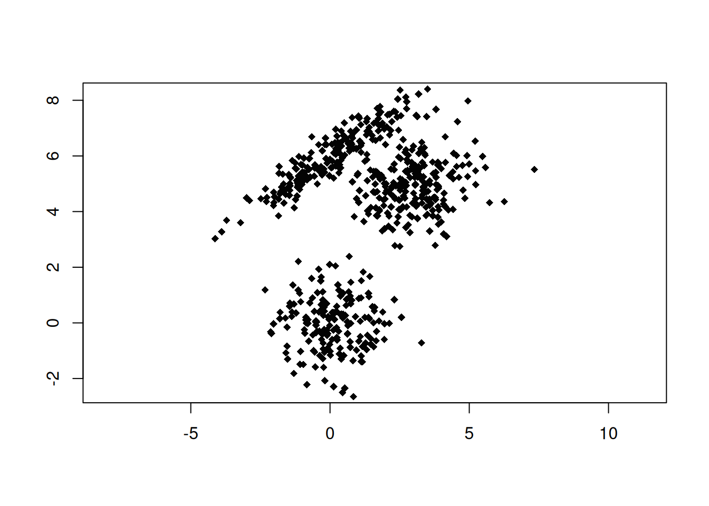
2.0.1.0.2 Répartition des points simulés - version ggplot
X %>% as_tibble() %>% ggplot(aes(x = V1, y= V2)) +
geom_point() + theme_minimal() + ggtitle("Répartition des points simulés en 2 dimensions")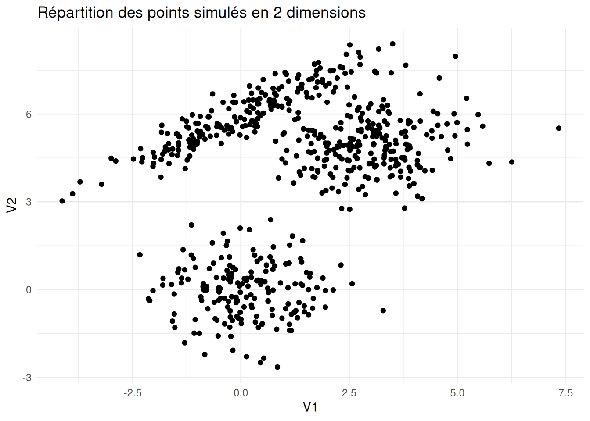
2.0.1.0.3 Représentation en 3D de l’histogramme de la loi normale bivariée
# 1. Créer les "bins" (les classes) pour les deux colonnes
x_bins <- cut(X[,1], breaks = 10)
y_bins <- cut(X[,2], breaks = 10)
# 2. Créer la table de fréquences (la matrice Z)
z_matrix <- table(x_bins, y_bins)
# 3. Définir les coordonnées des centres des barres
x_coords <- seq(min(X[,1]), max(X[,1]), length.out = nrow(z_matrix))
y_coords <- seq(min(X[,2]), max(X[,2]), length.out = ncol(z_matrix))
hist3D(x = x_coords, y = y_coords, z = z_matrix,
border = "black",
colkey = TRUE,
lighting = TRUE,
main = "Représentation 3D de la loi normale bivariée",
xlab = "x",
ylab = "y",
zlab = "Fréquence",
phi = 50, theta = -30) # Angles de vue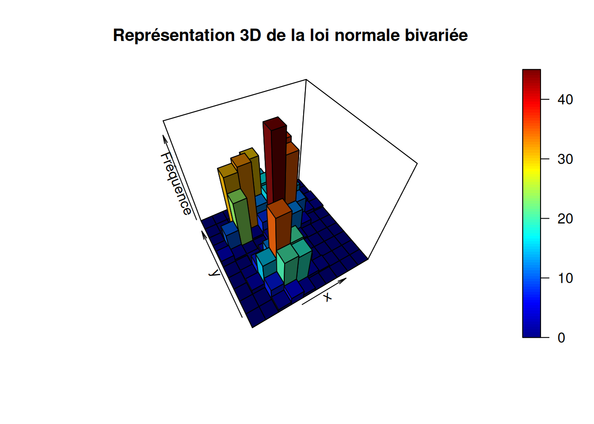
2.0.1.0.4 Répartition des individus
Groupe 1
On a 177 noirs (29,5%), 237 rouges (39,5%), 186 vert (31%).
On est dans une loi normale bivariée, de paramètre (Espérance, Matrice variance-covariance). De moyenne = (0,0) et de matrice variance covariance = marice identité :
diag(2) [,1] [,2]
[1,] 1 0
[2,] 0 1Groupe 2
On a une moyenne (3,5)
Groupe 3
On a une moyenne (0,6), et une matrice (2, 1.3, 1.3, 1)
prop.table(table(cl))cl
1 2 3
0.295 0.395 0.310 2.0.2 Représentation des données simulées en fonction de leur groupe
as_tibble(X) %>% ggplot(aes(x = V1, y=V2)) + geom_point(color = cl) + theme_minimal() + ggtitle("Représentation des variables continues en fonction des groupes prédéfinis") -> graph1
graph1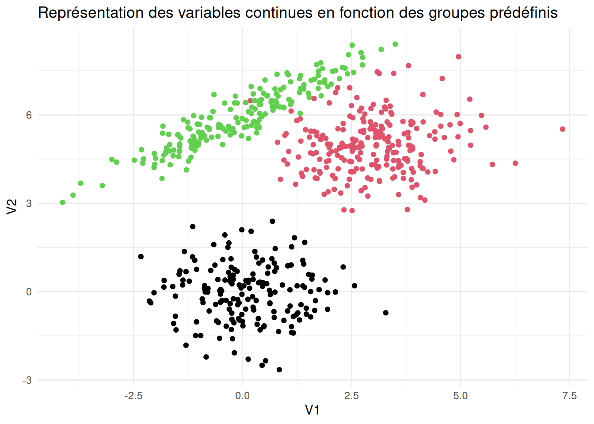
2.1 Création des variables discrètes
c1 : il utilise rbinom pour générer 600 chiffres avec une proba de succès de 0.5, +1 pour mettre les valeurs à 1 ou 2
c2 : si la couleur du point est noir alors on applique une proba plus importante au succès 1 sinon on applique une proba plus importante au succès 2.
# Creating discrete variables
# Note for poLCA and clustMD, coding must start at 1.
# Uniform prob. of success for all observations (success means a value of 2, whereas failure would be a value of 1)
c1 = rbinom(600, 1, .5) + 1
# Success more likely in red and green groups
c2 = NULL
for(i in 1:600){
ifelse(cl[i] == 1, c2[i]<-rbinom(1, 1, .1)+1, c2[i]<-rbinom(1, 1, .9)+1)
}
# More likely to be a 1 in black, a 2 in red and a 3 in green
c3 = NULL
for(i in 1:600){
if(cl[i] == 1) c3[i] = sample(1:3, 1, prob = c(.6, .2, .2))
if(cl[i] == 2) c3[i] = sample(1:3, 1, prob = c(.1, .8, .1))
if(cl[i] == 3) c3[i] = sample(1:3, 1, prob = c(.1, .1, .8))
}
# Success more likely in red group
c4 = NULL
for(i in 1:600){
ifelse(cl[i] == 2, c4[i]<-rbinom(1, 1, .8)+1, c4[i]<-rbinom(1, 1, .2)+1)
}
# Merging the variables into our complete mixed-mode dataset, vars
vars = cbind(X, c1, c2, c3, c4)
head(vars) c1 c2 c3 c4
[1,] 1.6137555 4.6784541 1 2 2 2
[2,] 0.3135524 -0.3026124 2 1 2 1
[3,] 3.1383011 3.7670414 2 2 2 1
[4,] -1.5400580 -0.1531943 1 1 1 1
[5,] 2.5165331 4.8541686 1 2 2 1
[6,] 1.9779610 4.4491698 1 2 2 22.1.0.0.1 Fréquence des modalités dans chaque groupe et variable des données
df_plot <- vars[, 3:6] %>%
as_tibble() %>%
mutate(cl = as.factor(cl)) %>%
pivot_longer(cols = c(c1, c2, c3, c4), names_to = "groupe", values_to = "valeur") %>%
mutate(valeur = as.factor(valeur))
# Création du graphique style "publication"
ggplot(df_plot, aes(x = cl, fill = valeur)) +
# Barres 100% empilées, avec un léger contour pour bien les séparer si besoin
geom_bar(position = "fill", width = 0.8) +
# Séparation par groupe (c1, c2, c3, c4)
facet_grid(~ groupe) + scale_fill_manual(values = c("grey30", "grey65", "grey90"))+
theme_classic()+
ggtitle("Fréquence des modalités dans chaque groupe et variable des données")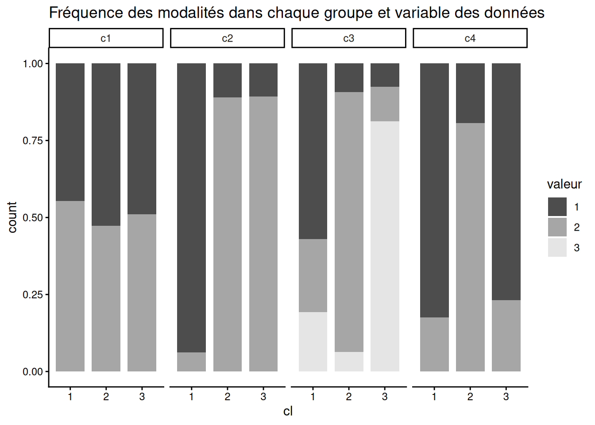
2.1.1 Application de la fonction k-means
On aurait pu explorer toutes les possiblités pour 2 clusters mais c’est impossible vu le nombre de possibilités
library(kStatistics)
nStirling2(600, 2)[1] 2.074758e+1802.2 Méthode du coude
# Elbow method
fviz_nbclust(vars [,1:2], kmeans, method = "wss") +
geom_vline(xintercept = 3, linetype = 2)+
labs(subtitle = "Méthode du coude - Nombre optimal de clusters") 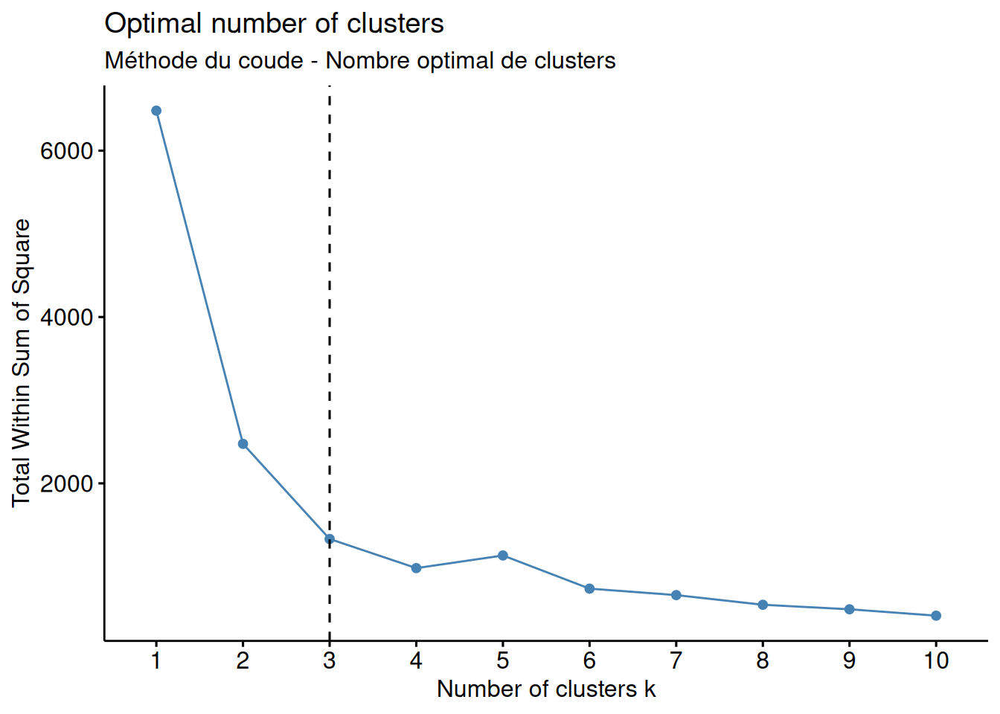
fviz_nbclust(vars [,1:2], kmeans, nstart = 25, method = "gap_stat", nboot = 50)+
labs(subtitle = "Gap statistic method") 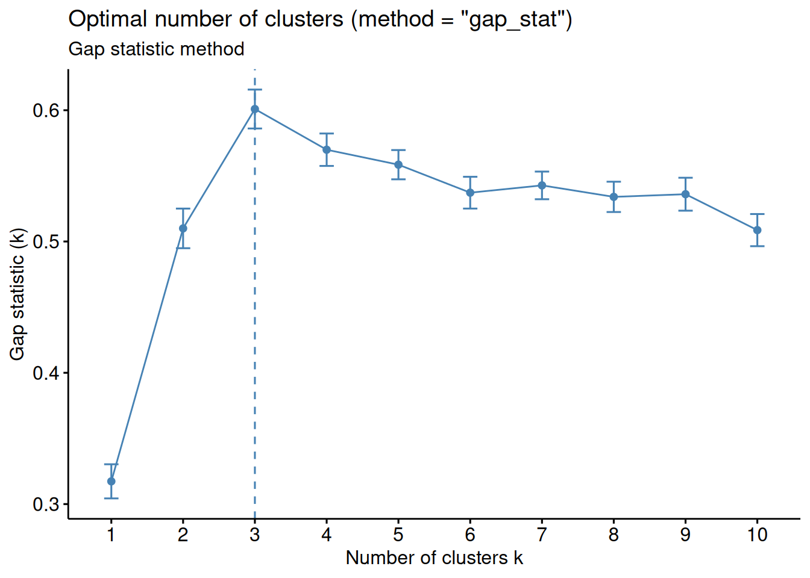
2.2.1 kmeans - Hartigan
Algo d’Hartigan
Description de l’algorithme d’Hartigam pour la méthode des kmeans.
\[\begin{array}{l} \textbf{Algorithme de Hartigan-Wong (K-Means)} \\ \hline 1.\ \textbf{Initialisation : } \text{Distribuer chaque point dans un cluster au hasard.} \\ 2.\ \textbf{Calcul des centres : } \text{Calculer le centre moyen de chaque groupe formé.} \\ 3.\ \textbf{Boucle principale : } \text{Pour chaque point du jeu de données :} \\ \quad 4.\ \textbf{Test de transfert : } \text{Calculer si déplacer le point vers un autre groupe} \\ \quad \quad \text{rend l'ensemble des clusters plus compact.} \\ \quad 5.\ \textbf{Décision : } \text{Si le transfert améliore la qualité globale :} \\ \quad \quad 6.\ \textbf{Action : } \text{Déplacer le point dans le nouveau groupe immédiatement.} \\ \quad \quad 7.\ \textbf{Mise à jour : } \text{Recalculer aussitôt le centre du groupe qui a perdu} \\ \quad \quad \quad \text{le point et celui du groupe qui l'a gagné.} \\ 8.\ \textbf{Convergence : } \text{Recommencer l'étape 3 tant que des points bougent encore.} \\ \hline \end{array}\]
library(gridExtra)
cluster1 = kmeans (vars [,1:2], 1, nstart = 50)
cluster2 = kmeans (vars [,1:2], 2, nstart = 50) # dans k1 il y a 181 individus / dans k2 il y en a 419
cluster3 = kmeans (vars [,1:2], 3, nstart = 50)
library(tidyverse)
# Point moyen : moyenne_1 & moyenne_2
as_tibble(vars[,1:2]) %>% summarise(moyenne_1 = mean(V1),
moyenne_2 = mean(V2),
Variance = (var(V1) + var(V2)) * 599 # Somme des distances euclidiennes par rapport au p.m,
) # A tibble: 1 × 3
moyenne_1 moyenne_2 Variance
<dbl> <dbl> <dbl>
1 1.18 3.79 6481.as_tibble(X) %>% ggplot(aes(x = V1, y=V2)) + geom_point(color = cluster3$cluster) + theme_minimal() + ggtitle("Représentation des variables continues en fonction des groupes prédéfinis") -> graph2
grid.arrange(graph1, graph2, nrow = 1)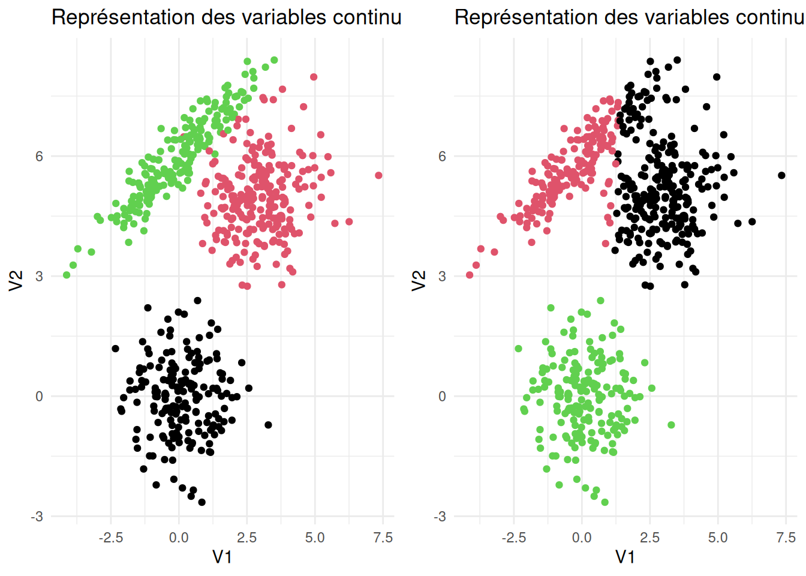
cl [1] 2 1 2 1 2 2 3 2 2 3 1 3 1 2 3 3 2 2 2 2 3 3 1 2 1 2 2 2 2 1 1 2 1 1 3 2 1
[38] 1 2 1 2 3 2 1 2 3 1 2 1 3 3 1 2 3 1 1 2 3 2 2 1 1 3 3 3 2 3 2 1 1 3 2 2 3
[75] 1 3 2 1 2 2 2 2 1 1 2 3 3 1 2 1 3 3 1 3 1 1 2 2 2 3 2 1 2 3 2 2 3 2 1 3 2
[112] 2 2 3 1 1 3 2 2 3 1 2 2 1 2 3 3 2 1 2 3 2 3 1 2 2 2 2 1 3 2 3 1 2 2 3 1 1
[149] 3 3 3 2 3 1 3 1 3 2 3 3 3 3 2 3 2 3 2 1 2 3 3 1 1 1 1 2 1 2 1 2 3 2 1 2 2
[186] 2 1 3 2 2 3 1 2 2 2 2 3 1 3 3 2 3 2 1 3 1 2 2 2 2 2 1 1 3 2 3 3 3 3 2 3 3
[223] 2 3 3 3 3 2 2 2 2 1 1 2 2 3 3 3 3 2 2 2 2 3 3 2 1 3 1 3 2 3 3 3 3 3 2 2 1
[260] 2 3 1 1 2 3 2 1 1 1 2 1 2 2 1 1 2 3 1 3 1 2 1 3 3 2 2 2 2 3 2 2 3 3 2 1 1
[297] 3 2 3 1 1 2 3 1 1 1 1 3 2 1 2 2 3 2 1 1 3 2 2 2 2 3 1 3 1 2 2 3 2 2 2 1 1
[334] 3 1 1 2 2 2 2 2 2 3 1 3 2 3 2 3 3 2 3 3 2 2 1 2 1 3 3 1 1 1 1 1 2 1 2 3 3
[371] 2 3 1 2 2 3 2 2 2 1 2 1 1 3 2 1 1 3 3 3 3 2 2 2 1 2 1 2 2 3 2 3 1 1 3 2 3
[408] 2 2 3 1 1 1 1 2 3 1 3 3 2 1 3 1 2 1 3 2 3 1 1 2 1 2 3 3 3 1 2 2 2 2 3 2 2
[445] 3 2 3 2 3 2 2 3 2 2 1 1 1 3 2 2 1 1 1 1 1 1 3 1 2 2 1 3 2 1 3 2 2 3 1 1 3
[482] 3 2 3 3 3 2 2 3 3 1 2 2 3 2 1 1 3 1 3 1 2 3 1 2 3 2 2 2 3 1 2 3 1 3 2 2 1
[519] 2 2 3 2 1 1 1 3 2 1 1 1 2 2 2 2 1 1 3 2 2 1 3 2 1 3 3 1 3 2 1 3 2 3 3 2 3
[556] 1 2 3 2 2 2 2 2 1 1 1 3 2 1 3 3 3 1 2 1 3 3 3 3 1 1 1 1 2 1 2 3 2 1 3 2 3
[593] 2 3 1 1 1 1 2 2cluster3$cluster [1] 1 3 1 3 1 1 2 1 1 2 3 2 3 1 2 2 1 1 1 1 2 2 3 1 3 1 1 1 1 3 3 2 3 3 1 1 3
[38] 3 1 3 1 2 1 3 1 2 3 1 3 1 2 3 1 1 3 3 1 2 1 1 3 3 2 2 2 2 2 1 3 3 2 1 1 2
[75] 3 2 2 3 2 1 1 1 3 3 1 2 2 3 1 3 2 2 3 2 3 3 1 1 1 2 1 3 1 2 1 1 1 1 3 2 1
[112] 1 1 2 3 3 2 1 1 2 3 1 1 3 1 2 2 1 3 1 2 1 2 3 1 1 1 1 3 2 1 1 3 1 1 2 3 3
[149] 2 2 2 1 2 3 2 3 2 1 2 2 2 2 1 2 1 2 1 3 1 2 2 3 3 3 3 1 3 2 3 1 2 1 3 1 1
[186] 1 3 2 1 1 2 3 1 1 1 1 2 3 2 1 1 1 1 3 2 3 1 1 1 1 1 3 3 2 1 1 1 2 1 1 1 2
[223] 1 1 1 2 2 1 1 1 1 3 3 1 1 2 2 2 2 1 1 1 1 2 2 1 3 2 3 2 1 2 2 2 1 1 1 1 3
[260] 1 2 3 3 1 1 2 3 3 3 1 3 1 1 3 3 1 2 3 2 3 1 3 2 2 1 1 1 1 2 1 1 2 2 1 3 3
[297] 2 1 1 3 3 1 2 3 3 3 3 2 1 3 1 1 1 1 3 3 2 1 1 1 1 2 3 2 3 1 1 2 1 1 2 3 3
[334] 2 3 3 1 1 1 1 1 1 2 3 1 1 2 1 2 2 1 2 2 1 1 3 1 3 1 2 3 3 3 3 3 1 3 1 2 2
[371] 1 2 3 1 1 2 1 1 1 3 1 3 3 2 1 3 3 1 2 2 2 1 1 1 3 1 3 1 1 1 1 2 3 3 2 1 2
[408] 1 1 2 3 3 3 3 1 2 3 2 2 1 3 2 3 1 3 2 1 2 3 3 1 3 1 2 2 2 3 1 1 1 1 2 1 1
[445] 2 1 2 1 1 1 1 1 1 1 3 3 3 1 2 1 3 3 3 3 3 3 2 3 1 1 3 2 1 3 1 1 1 1 3 3 1
[482] 2 1 2 1 1 1 1 2 2 3 1 1 2 1 3 3 2 3 2 3 1 2 3 1 2 1 1 2 1 3 1 2 3 2 1 1 3
[519] 1 1 2 1 3 3 3 2 1 3 3 3 1 1 1 1 3 3 2 1 1 3 2 1 3 2 2 3 2 1 3 2 1 2 2 1 2
[556] 3 1 2 1 1 1 1 1 3 3 3 2 1 3 2 2 2 3 1 3 2 2 2 2 3 3 3 3 2 3 1 2 1 3 2 1 1
[593] 1 1 3 3 3 3 1 1table(tibble(cl, cluster3$cluster)) cluster3$cluster
cl 1 2 3
1 0 0 177
2 227 10 0
3 33 153 0library(clue)
solve_correspondance = solve_LSAP(table(tibble(cl, cluster3$cluster)), maximum = TRUE)
conf_matrice = table(tibble(cl, cluster3$cluster))[, solve_correspondance]
1-sum(diag(conf_matrice))/600 # le taux de points mal placés[1] 0.07166667L’article aurait dû utiliser l’indice de Rand pour évaluer la concordance entre les données simulées et la répartition trouvée par kmeans(). Explicatoin du fonctionnement du Rand : L’indice de Rand est une mesure de similarité entre deux partitions d’un ensemble. Il est principalement utilisé en catégorisation automatique. Son principe est de mesurer la consistance (le taux d’accord) entre deux partitions.
Prenons un exemple pour illustrer la méthode, supposons une classe qui a 9 élèves, on veut comparer les deux partitions suivante : - partition 1 : {A,B}, {C,D,E,F,G}, {H,I} - partition 2 : {A}, {B}, {C,D,E}, {F,G}, {H,I}
L’indice va compter le nombre de paires parmi les 36 qui sont soit dans un même groupe, soit dans deux groupes différents dans la partition 1 et la partition 2.
Dans cet exemple, on trouve 80,6% de concordance.
library(fossil)Loading required package: spLoading required package: maps
Attaching package: 'maps'The following object is masked from 'package:mclust':
mapThe following object is masked from 'package:purrr':
mapLoading required package: shapefilesLoading required package: foreign
Attaching package: 'shapefiles'The following objects are masked from 'package:foreign':
read.dbf, write.dbfg1 = c(1, 1,rep(2, 5), 3,3)
g2 = c(1, 2, 3, 3, 3, 4, 4, 5, 5)
rand.index(g1, g2)[1] 0.8055556(7+7+6+6+6+5+5+8+8)/36/2[1] 0.8055556Application de l’indice de Rand à nos données de clustering. Le kmeans() avec k = 3 nous donne de concordance de 90,1%.
rand.index(cl, cluster3$cluster)[1] 0.9090707La classification hiérarchique :
méthode single linkage
dist(vars[, 1:2], diag = TRUE, method = "euclidean")-> distancelibrary(fastcluster)
Attaching package: 'fastcluster'The following object is masked from 'package:stats':
hclustarbre <- hclust(distance, method = "average")
plot(arbre, labels = FALSE, main = "Dendrogramme")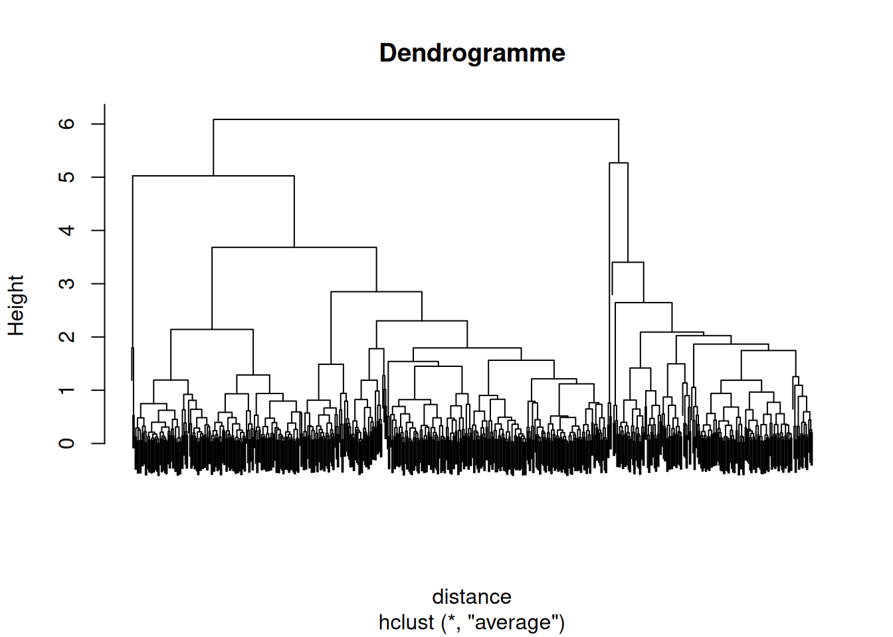
library(sparcl)
ColorDendrogram(arbre, y = cl, main="Single Linkage", xlab = "", sub = "", cex = .75)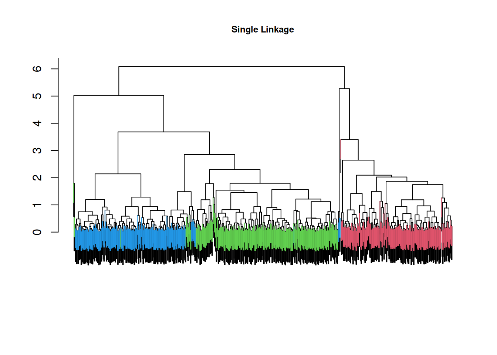
rand.index(cl, cutree(arbre, k=3))[1] 0.7559154solve_correspondance_arbre = solve_LSAP(table(tibble(cl, cutree(arbre, k=3))), maximum = TRUE)
conf_matrice_arbre = table(tibble(cl, cutree(arbre, k=3)))[, solve_correspondance_arbre]
conf_matrice_arbre cutree(arbre, k = 3)
cl 2 1 3
1 177 0 0
2 0 237 0
3 0 182 42.3 Illustration avec 10 individus:
cbind(X, cl) -> data_10
data_10 %>% as_tibble() %>% arrange(cl) %>% slice(1:3, 178:181, 598:600)-> data_10
cluster_10 = kmeans (data_10, 3, nstart = 50)
dist(data_10[,1:2], diag = TRUE, method = "euclidean")-> distance_10
arbre_10 <- hclust(distance_10, method = "average")
plot(arbre_10, main = "Dendrogramme")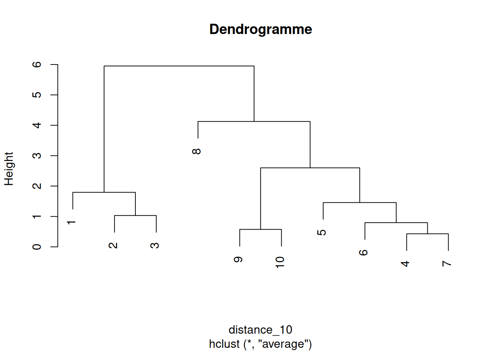
ColorDendrogram(arbre_10, y = data_10$cl, main="Single Linkage", xlab = "", sub = "", cex = .75, labels = row.names(data_10)) -> graph_10_1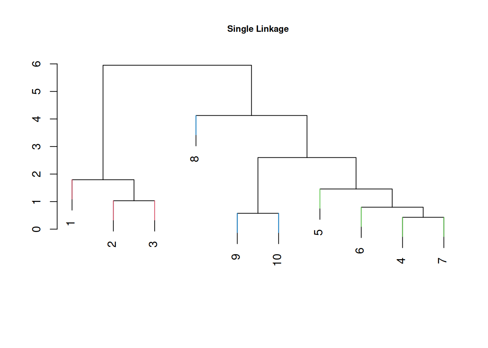
data_10 %>% as.data.frame() %>% ggplot(aes(x = V1, y = V2, label =row.names(data_10)))+
geom_point(aes(color = factor(data_10$cl)), size = 2.5)+geom_text(hjust = 2)+
theme_minimal() -> graph_10_2
cbind(graph_10_1, graph_10_2) graph_10_2
[1,] <ggplot2::ggplot>library(dendextend)
---------------------
Welcome to dendextend version 1.19.1
Type citation('dendextend') for how to cite the package.
Type browseVignettes(package = 'dendextend') for the package vignette.
The github page is: https://github.com/talgalili/dendextend/
Suggestions and bug-reports can be submitted at: https://github.com/talgalili/dendextend/issues
You may ask questions at stackoverflow, use the r and dendextend tags:
https://stackoverflow.com/questions/tagged/dendextend
To suppress this message use: suppressPackageStartupMessages(library(dendextend))
---------------------
Attaching package: 'dendextend'The following object is masked from 'package:stats':
cutreelibrary(circlize)========================================
circlize version 0.4.18
CRAN page: https://cran.r-project.org/package=circlize
Github page: https://github.com/jokergoo/circlize
Documentation: https://jokergoo.github.io/circlize_book/book/
If you use it in published research, please cite:
Gu, Z. circlize implements and enhances circular visualization
in R. Bioinformatics 2014.
This message can be suppressed by:
suppressPackageStartupMessages(library(circlize))
========================================# Hierarchical clustering dendrogram
hc <- as.dendrogram(arbre)
# Circular dendrogram
circlize_dendrogram(hc,
labels_track_height = NA,
dend_track_height = 0.5,
labels = FALSE)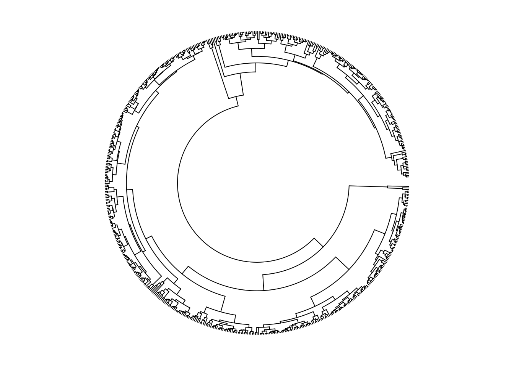
2.3.1 kmeans - Lloyd
Algo de Lloyd
\[\begin{array}{l} \textbf{Algorithme de Lloyd (K-Means)} \\ \hline 1.\ \textbf{Initialisation : } \text{Choisir } k \text{ points au hasard pour être les centres.} \\ 2.\ \textbf{Boucle principale : } \textbf{Répéter tant qu'il y a des changements :} \\ \quad 3.\ \textbf{Assignation globale : } \text{Chaque point choisit le centre le plus} \\ \quad \quad \text{proche sans se soucier des autres points.} \\ \quad 4.\ \textbf{Attente : } \text{On attend que TOUS les points aient choisi leur groupe.} \\ \quad 5.\ \textbf{Mise à jour groupée : } \text{Une fois que tout le monde a fini de bouger,} \\ \quad \quad \text{on recalcule tous les nouveaux centres en une seule fois.} \\ 6.\ \textbf{Convergence : } \text{Arrêter quand les centres ne bougent plus d'une étape à l'autre.} \\ \hline \end{array}\]
cluster3_lloyd = kmeans (vars [,1:2], 3, nstart = 50, algorithm = "Lloyd")Warning: did not converge in 10 iterations
Warning: did not converge in 10 iterations
Warning: did not converge in 10 iterations
Warning: did not converge in 10 iterations
Warning: did not converge in 10 iterations
Warning: did not converge in 10 iterations
Warning: did not converge in 10 iterations
Warning: did not converge in 10 iterations
Warning: did not converge in 10 iterations
Warning: did not converge in 10 iterations
Warning: did not converge in 10 iterations
Warning: did not converge in 10 iterations
Warning: did not converge in 10 iterationsas_tibble(X) %>% ggplot(aes(x = V1, y=V2)) + geom_point(color = cluster3_lloyd$cluster) + theme_minimal() + ggtitle("Représentation des variables continues en fonction des groupes prédéfinis")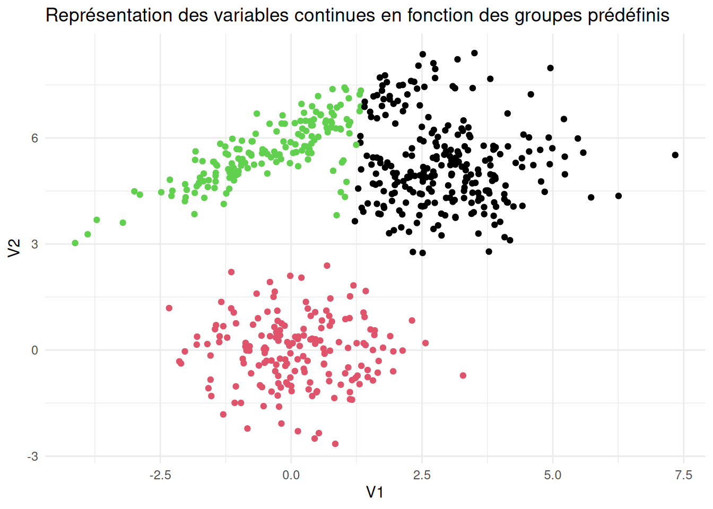
ESSAYER L4AUTRE METHODE
2.3.2 Représentation de l’enveloppe convexe
# 1. Combiner vos données, la couleur d'origine (cl) et les résultats du k-means
df <- as_tibble(X) %>%
mutate(
Couleur_Origine = cl,
# On extrait les affectations aux clusters de l'objet kmeans en facteur
Cluster_Kmeans = as.factor(cluster3_lloyd$cluster)
)
# 2. Calculer les points formant l'enveloppe convexe pour CHAQUE cluster k-means
# La fonction chull() renvoie les indices des points qui forment la bordure convexe
hulls <- df %>%
group_by(Cluster_Kmeans) %>%
slice(chull(V1, V2))
# 3. Créer le graphique combiné
ggplot(df, aes(x = V1, y = V2)) +
# Étape A : Tracer les enveloppes convexes (polygones) des K-means
# alpha = 0.3 permet de rendre la surface transparente pour voir les points
geom_polygon(data = hulls,
aes(fill = Cluster_Kmeans, group = Cluster_Kmeans),
alpha = 0.3, color = "black", linetype = "dashed") +
scale_fill_manual(values = c("#FAADAD", "#ADB4FA", "#ADFABA"))+
# Étape B : Tracer les points avec leurs couleurs d'origine (groupes prédéfinis)
geom_point(aes(color = factor(Couleur_Origine))) +
# Esthétique
theme_minimal() +
ggtitle("Représentation des variables continues en fonction des groupes prédéfinis\net enveloppes convexes des K-means") +
labs(fill = "Clusters K-means", color = "Groupes initiaux") 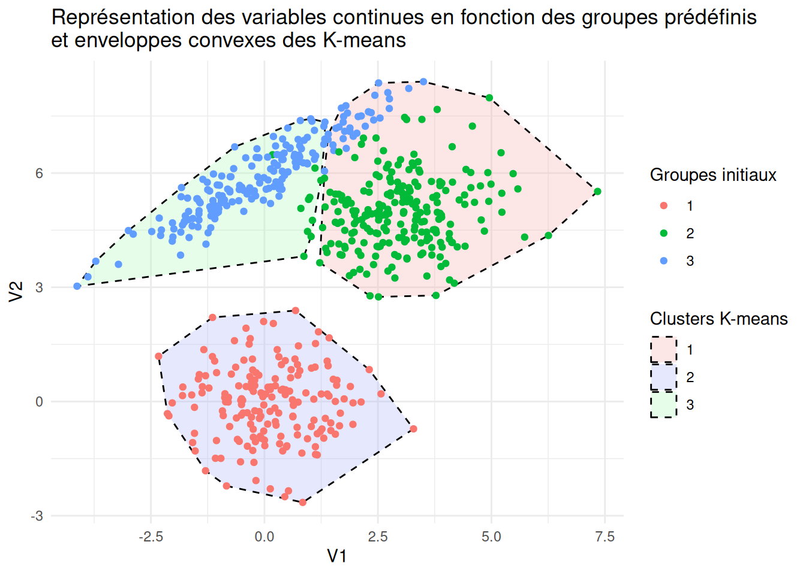
fviz_cluster(cluster3_lloyd,
data = vars[, 1:2],
ellipse.type = "convex",
geom = "point", # "point" évite d'afficher le numéro de chaque ligne
show.clust.cent = TRUE, # Affiche le centre des clusters (croix)
main = "Représentation des clusters K-means")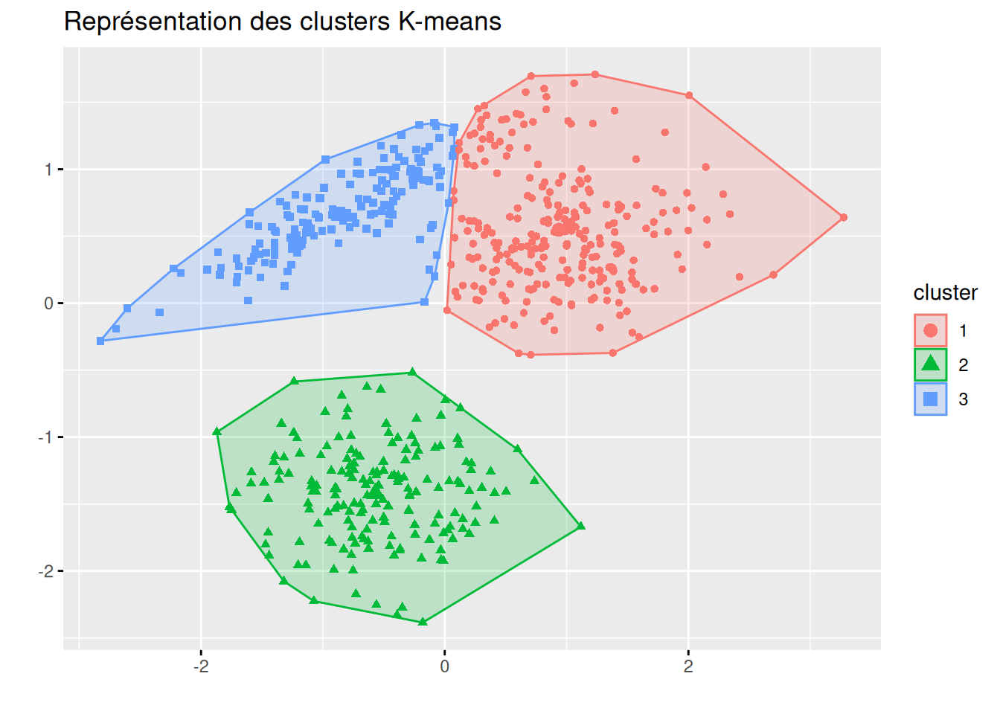
2.4 Clustering Methods Based
EXPLIQUER LE PRINCIPE
on est dans le cas multivariée
C’est le maximum de vraisemblance, avec le BIC le plus grand
Après on compare la simulation avec cette méthode
#Fit the mbc model for a range of number of components, default 1 to 9 and all variance parameterisations on the continuous variables in the first two columns of the vars matrix
m1 = Mclust(vars[,1:2])
m1'Mclust' model object: (VVE,3)
Available components:
[1] "call" "data" "modelName" "n"
[5] "d" "G" "BIC" "loglik"
[9] "df" "bic" "icl" "hypvol"
[13] "parameters" "z" "classification" "uncertainty" #'Mclust' model object:
# best model: ellipsoidal, equal orientation (VVE) with 3 components
#Look at the summary of the model
summary(m1)----------------------------------------------------
Gaussian finite mixture model fitted by EM algorithm
----------------------------------------------------
Mclust VVE (ellipsoidal, equal orientation) model with 3 components:
log-likelihood n df BIC ICL
-2230.692 600 15 -4557.338 -4572.94
Clustering table:
1 2 3
229 177 194 #m1$parameters#----------------------------------------------------
# Gaussian finite mixture model fitted by EM algorithm
#----------------------------------------------------
# Mclust VVE (ellipsoidal, equal orientation) model with 3 components:
# log.likelihood n df BIC ICL
#-2230.702 600 15 -4557.359 -4572.325
#Clustering table:
# 1 2 3
#229 177 194
#Look at the BIC, classification and other plots for this model
plot(m1)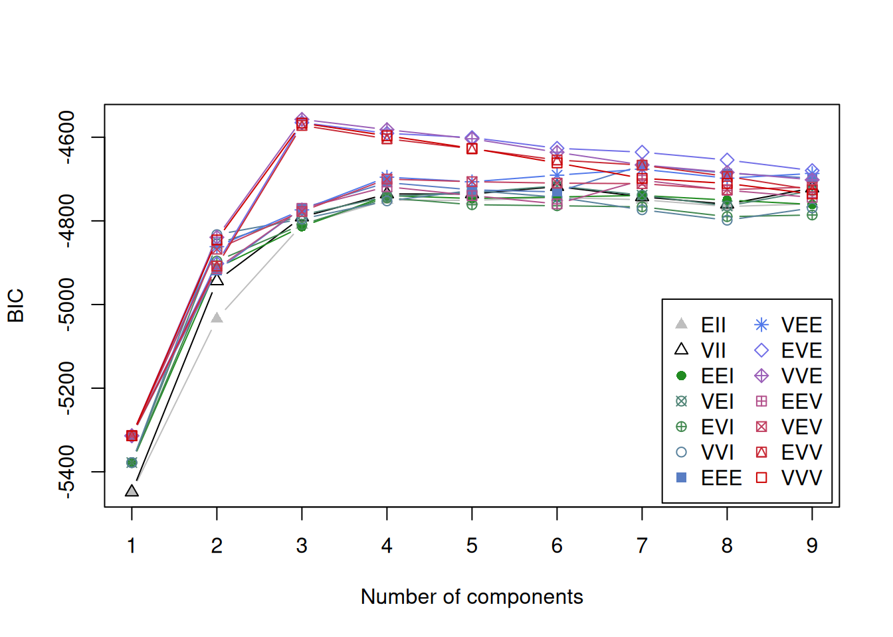
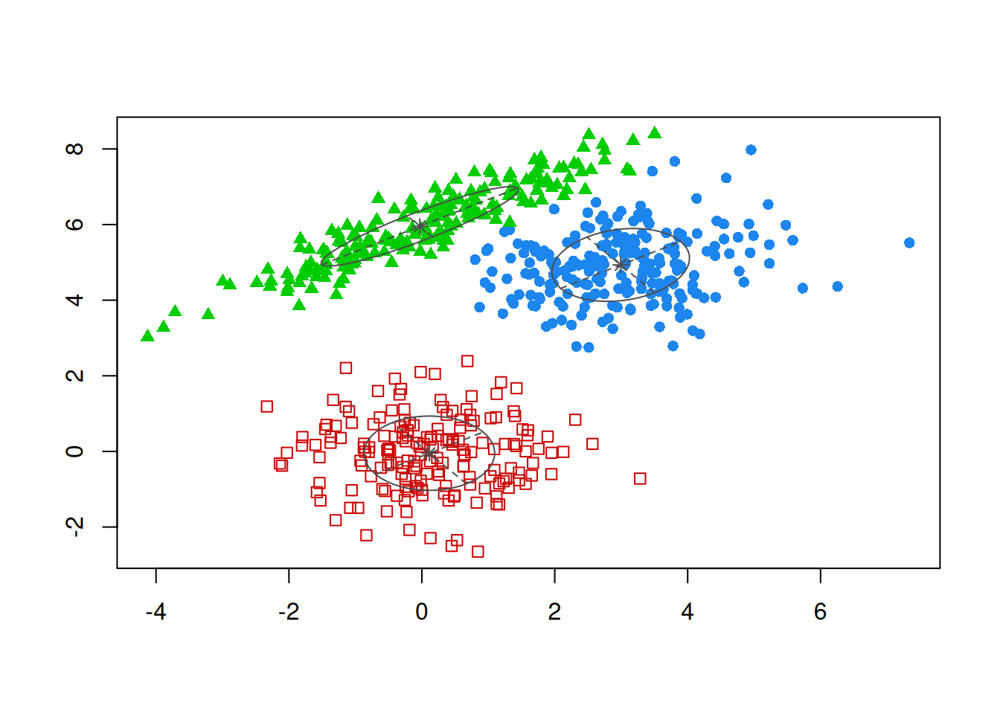
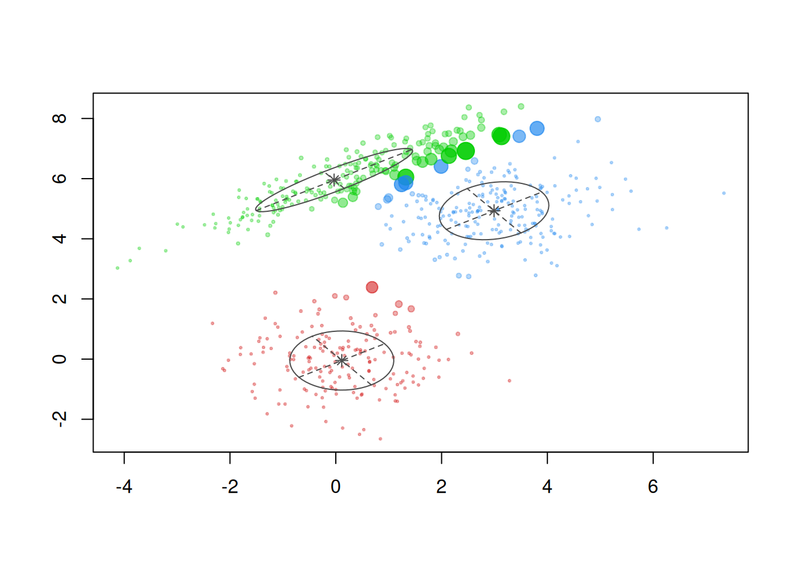
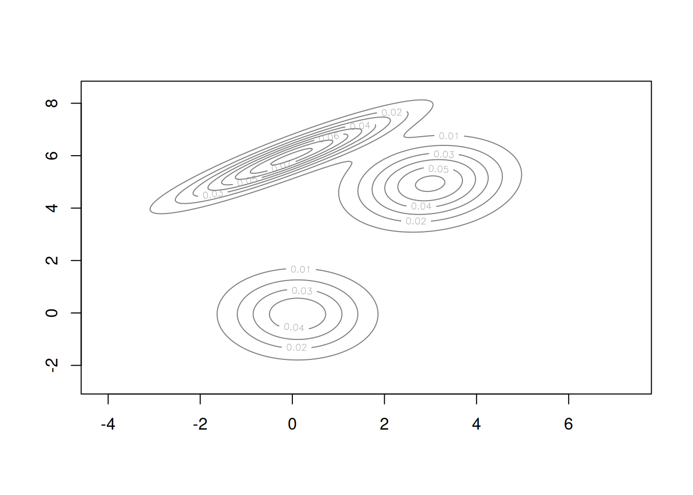
# cross-classification table
#table(cl, m1$class)Les références
Flynt, Abby, et Nema Dean. 2016. « A Survey of Popular R Packages for Cluster Analysis ». Journal of Educational and Behavioral Statistics 41 (2): 205‑25.